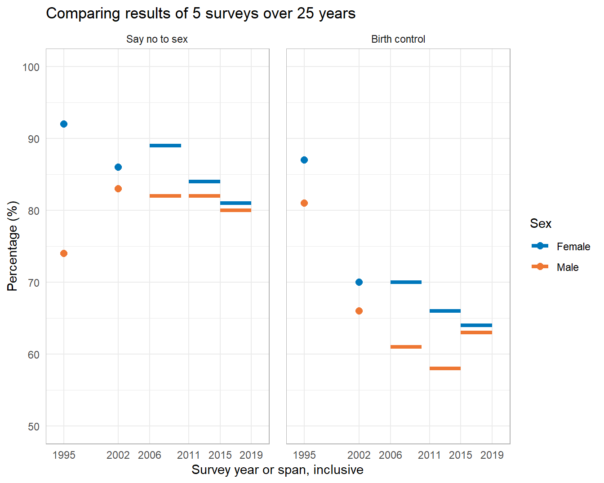

R code
# packages used
library("data.table")
library("ggplot2")
library("ggpubfigs")Combining the results of studies with different time spans in a single chart when changes over time are the story.
In working on a previous post, I cited an article on US sex education for adolescents (Lindberg & Kantor, 2022). That article included a conventional grouped bar chart displaying results of five surveys over 25 years from the National Survey of Family Growth (NSFG).
The chart caught my attention because its visual design is slightly dissonant with its rhetorical purpose. Its purpose is to support the assertion that five surveys over 25 years reveal a decline in US sex education. Time is the implicit independent variable. The chart design, however, uses grouped bars in which evolution over time is not encoded to scale.
The original chart supports the authors’ argument, but I was curious if a redesigned chart, treating time as a scaled, explicit independent variable, could improve the visual rhetoric. And if so, does it reveal aspects of the data stories previously hidden?
The R code for the post is listed under the “R code” pointers.
# packages used
library("data.table")
library("ggplot2")
library("ggpubfigs")The grouped bar chart by Lindberg and Kantor illustrates the changing fraction of US adolescents receiving sex education instruction from 1995 to 2019. The results are compiled from 5 studies, each with its own time span. Bars are grouped by educational topic and student sex.

In their prose, the authors make the argument that
Young people today are less likely to receive instruction on key sex education topics than they were 25 years ago, as indicated by comparing the prevalence estimates from 2011–2015 and 2015–2019 calculated in this study to published estimates from earlier NSFG rounds.
The chart supports the assertion. The quantitative variable (percentage) is the bar height, encoded using a zero baseline that (correctly) avoids distorting visual comparisons. The survey years—the implicit independent variable—are in sequence from left to right and are encoded by a sequential gray-scale fill.
Grouped-bar charts are generally OK for visually comparing bar heights within a group, but less useful for comparing between groups. For example, the evolution of “Say No to Sex” for Females clearly shows a descending trend; the same information for Males is fairly constant. The design does not, however, facilitate direct, year-by-year comparisons between data in different clusters. Nor does it visually encode the temporal span of a study within the overall 25 years.
In addition, much of the chart portrays what Edward Tufte calls “non-data-ink.” In this instance, only the bar height (percentage) and the gray-scale (survey years) encode data—neither the width of a bar nor the area of a bar convey information. Such non-data-ink can distract a viewer from the intended message. In this example, the filled-in bars create a visual geography that draws my eye to the center of a cluster area—a sort of visual center of gravity. I have to consciously focus on the bar tops to make comparisons.
In my redesigned chart, I attempt to address these issues.
The data structure is outlined in Table 1. The percentage of teens aged 15–19 receiving instruction is the single quantitative variable. Because three of the studies cover a span of years, I treat the starting and ending years as separate variables.
| variable | structure |
|---|---|
| year study starts | categorical, ordinal, five levels |
| year study ends | categorical, ordinal, five levels |
| educational topic | categorical, nominal, two levels |
| student sex | categorical, nominal, two levels |
| percent receiving instruction | quantitative |
I don’t have the original data tables, so I approximated the values by measuring the bar lengths in the original figure. These estimates are available in the blog data directory as a CSV file.
# read the data
dt <- fread("data/sex-ed-topics-data.csv",
colClasses = list(double = c("start", "end", "pct")))
# display
dt[] study start end Topic Sex pct
<int> <num> <num> <char> <char> <num>
1: 1 1995 1995 Birth control Female 87
2: 1 1995 1995 Birth control Male 81
3: 1 1995 1995 Say no to sex Female 92
4: 1 1995 1995 Say no to sex Male 74
5: 2 2002 2002 Birth control Female 70
6: 2 2002 2002 Birth control Male 66
7: 2 2002 2002 Say no to sex Female 86
8: 2 2002 2002 Say no to sex Male 83
9: 3 2006 2010 Birth control Female 70
10: 3 2006 2010 Birth control Male 61
11: 3 2006 2010 Say no to sex Female 89
12: 3 2006 2010 Say no to sex Male 82
13: 4 2011 2015 Birth control Female 66
14: 4 2011 2015 Birth control Male 58
15: 4 2011 2015 Say no to sex Female 84
16: 4 2011 2015 Say no to sex Male 82
17: 5 2015 2019 Birth control Female 64
18: 5 2015 2019 Birth control Male 63
19: 5 2015 2019 Say no to sex Female 81
20: 5 2015 2019 Say no to sex Male 80
study start end Topic Sex pctTo organize the chart, I convert the Topic and Sex variables to factors. I select the order of the factor levels to control the placement of panels and legend entries.
# manually order two categories
dt$Topic <- factor(dt$Topic, levels = c("Say no to sex", "Birth control"))
dt$Sex <- factor(dt$Sex, levels = c("Female", "Male"))The original article argues that the decline in the quantitative variable evolves over time, thus a scatterplot design is my starting point. Time (discrete years) is on the horizontal scale and the percent receiving instruction on the vertical scale. One-year surveys are represented with “point” data markers and multi-year surveys with line segments. Topics are assigned to panels and sex to color.
ggplot() +
geom_point(data = dt[start == end],
mapping = aes(x = start, y = pct, color = Sex),
size = 2.5) +
geom_segment(data = dt[start != end],
mapping = aes(x = start, xend = end, y = pct, yend = pct, color = Sex),
size = 1.5) +
facet_wrap(vars(Topic), ncol = 2) +
# scales
scale_x_continuous(limits = c(1994, 2020),
breaks = c(1995, 2002, 2006, 2011, 2015, 2019)) +
scale_y_continuous(limits = c(50, 100)) +
scale_color_manual(values = friendly_pal("vibrant_seven")) +
labs(x = "Survey year or span, inclusive",
y = "Percentage (%)",
title = "Comparing results of 5 surveys over 25 years") +
# customize the theme
theme_minimal() +
theme(legend.position = "right",
panel.spacing.x = unit(5, "mm"),
panel.grid.minor.x = element_blank(),
panel.border = element_rect(fill = NA, color = "gray70"))
Unlike the original chart, the time scale is in correct proportion. Scale markings match the survey dates.
Like the original, the vertical scale is the percentage receiving instruction. Unlike bar charts however, this chart does not require a zero baseline. I select an aspect ratio to highlight, but not distort, the comparisons.
With topics in separate panels, the relative trends are much easier to see. With sex encoded by color, each facet permits a direct, year-by-year comparison between Female and Male survey responses on a topic.
Comparisons between panels is more difficult than comparisons within a panel, but removing the non-data-ink has made it easier to compare the data by topic and sex over time and in specific study years.
The authors’ discussion of the original chart include the following points, that the revised chart also supports:
The revised chart supports each of these points with greater visual clarity than the original. Moreover, the new chart supports two additional, general observations:
Females receive instruction at higher rates than males (though the gap has closed in recent years).
Abstinence is nearly always instructed at higher rates than contraception.
In my opinion, the first observation would seem to reflect a cultural bias that views pregnancy as a “womans’ issue” (Phillips, 2018). The second, our society’s willingness to indulge in (and fund) wishful thinking (Guttmacher Institute, 2021).
The authors’ original argument is supported by the new chart and with greater visual access to the underlying data than the original grouped bar chart. Thus in response to my original question, I think the visual rhetoric has been improved and previously hidden nuance has been revealed.
Lastly, encoding time to scale does not yield any particularly interesting insights regarding the survey results—but it does display the relative timing and duration of the surveys, possibly enhancing the credibility of the evidence.
ggpubfigs for color-vision-deficient-friendly palettes